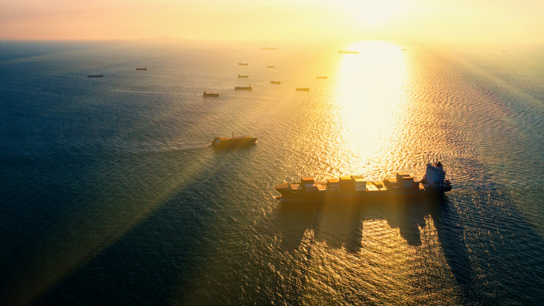

ProjectsThe partnership is hosting nineteen projects on research and innovation. All ongoing projects can be found below. Filter by category Priority area - Any -PA1 - Planning and managing sea uses at the regional levelPA2 - Development of offshore marine multi-use infrastructures to support the blue economyPA3 - Climate-neutral, environmentally sustainable and resource-efficient blue food and feedPA4 - Green transition of Blue Food productionPA5 - Digital Twin of the Ocean (DTO) test use cases at EU sea-basins and the Atlantic Ocean Phase - Any -OngoingCompleted Country - Any -BelgiumItalyNorwayGermanyPortugalFranceSpainIrelandSwedenRomaniaCyprusFinlandLithuaniaThe NetherlandsTurkeyEstoniaFaroe IslandsPolandSloveniaDenmarkGreeceIcelandBulgariaLatviaMaltaBrazilTunisiaUnited KingdomCanada  AQUABALANCE PA4 - Green transition of Blue Food production ongoing Balancing economic, environmental, and social sustainability in the European aquaculture industry Learn more ➝ AquaUP PA3 - Climate-neutral, environmentally sustainable and resource-efficient blue food and feed ongoing Aquafeed Upgraded: Enhancing Immune Function with Seaweed-modified Functional Compounds Learn more ➝ ARCFISH PA5 - Digital Twin of the Ocean (DTO) test use cases at EU sea-basins and the Atlantic Ocean ongoing Digital Twin of the Ocean for Arctic Fisheries Learn more ➝ Blue Bio Boost PA3 - Climate-neutral, environmentally sustainable and resource-efficient blue food and feed ongoing Boosting seaweed farming through better utilization of genetic resources Learn more ➝ BlueBoost PA3 - Climate-neutral, environmentally sustainable and resource-efficient blue food and feed ongoing Project Title Culture of a wide range of low trophic species to boost sustainable production of Blue Food and reduce environmental footprint Learn more ➝ BluEcho PA1 - Planning and managing sea uses at the regional level ongoing From science to policy: assessing impacts and developing solutions for ship traffic and offshore wind farms through detailed soundmaps Learn more ➝ BLUEWAYSE PA3 - Climate-neutral, environmentally sustainable and resource-efficient blue food and feed ongoing BLUE WAY to a Sustainable Europe Learn more ➝ CliN-BluFeed PA3 - Climate-neutral, environmentally sustainable and resource-efficient blue food and feed ongoing A low CO2 smart autonomous multiplatform system to monitor and forecast Calanus finmarchicus stock - a new sustainable climate neutral blue fish feed Learn more ➝ DTO-Track PA5 - Digital Twin of the Ocean (DTO) test use cases at EU sea-basins and the Atlantic Ocean ongoing Digital Twin of the Ocean: Animal Tracking Learn more ➝ FAMOS PA2 - Development of offshore marine multi-use infrastructures to support the blue economy ongoing Sustainable, Reliable and Socially Acceptable Modular Floating IslAnds for Multi-use Offshore Spaces Learn more ➝ FOODIMAR PA3 - Climate-neutral, environmentally sustainable and resource-efficient blue food and feed ongoing Sustainable climate-Friendly quality fOOD Ingredients from MArine side-stReams Learn more ➝ FunSea PA3 - Climate-neutral, environmentally sustainable and resource-efficient blue food and feed ongoing Functional processing of cultivated seaweeds for novel food products Learn more ➝ INSPIRE PA2 - Development of offshore marine multi-use infrastructures to support the blue economy ongoing Innovative design and operation for rare earth material reduction and optimized lifetime for next generation offshore wind-based hydrogen production Learn more ➝ MEDSEAPLAN PA1 - Planning and managing sea uses at the regional level ongoing Data and Scenarios for a Sustainable Mediterranean Blue Economy Learn more ➝ RE-BLUE PA3 - Climate-neutral, environmentally sustainable and resource-efficient blue food and feed ongoing Resource efficient blue food production from small underutilized pelagic fish species (RE-BLUE) Learn more ➝ SEAFOODTURE PA3 - Climate-neutral, environmentally sustainable and resource-efficient blue food and feed ongoing Integral valorisation of seaweed biomass for the development of sustainable, high nutritional quality food products Learn more ➝ SEAREFINERY PA3 - Climate-neutral, environmentally sustainable and resource-efficient blue food and feed ongoing Improved Valorization of Marine Sources and Processing Waste for Resource Efficient Blue Food/Feed and Environmentally Sustainable Materials Development Learn more ➝ SHELLFISHBOOST PA3 - Climate-neutral, environmentally sustainable and resource-efficient blue food and feed ongoing Boosting the resilience of European shellfish production against climate change-related challenges through genetic selection Learn more ➝ WASTE2TASTE PA3 - Climate-neutral, environmentally sustainable and resource-efficient blue food and feed ongoing From waste to taste: exploring innovative food applications of postharvest fish losses Learn more ➝ Stay updated Email Address I have read and agree with the privacy policy.